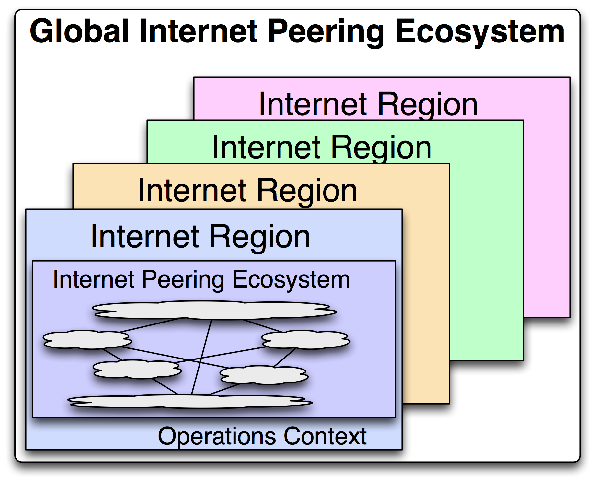
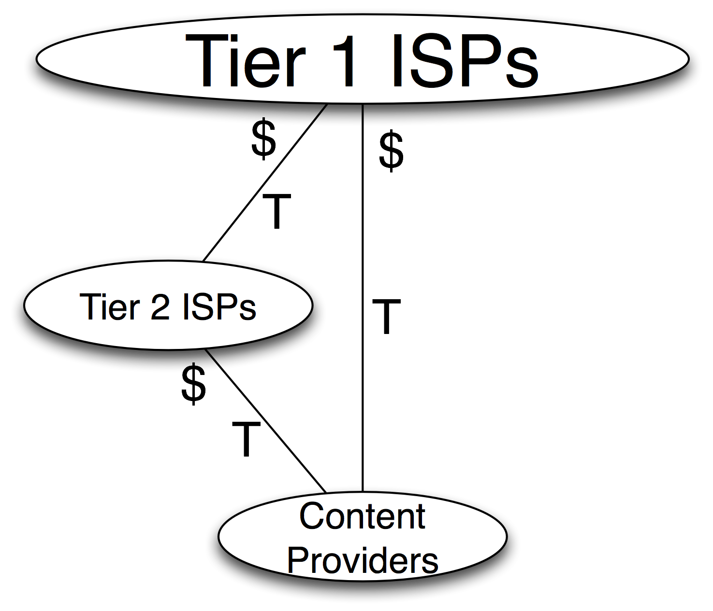

Ch 9 - The Global Internet Peering Ecosystem
In this chapter we model the Internet as a Global Internet Peering Ecosystem consisting of Internet Regions, each of which contains an Internet Peering Ecosystem. The categories of participants in each ecosystem are identical across the globe. Their corresponding power positions dictate their motivations and drive their behaviors.
The base model presented in this chapter exists in every Internet Region studied. The names of the players may be different, but the behavior is predictably the same.
The chapter that follows will enhance this base model by identifying additional key players that participate in the ecosystems.
The Global Internet Peering Ecosystem
While the commercial Internet has grown organically, it has developed with a consistent and identifiable structure. This structure can best be described as the Global Internet Peering Ecosystem.
Definition: The Global Internet Peering Ecosystem is the set of loosely coupled Internet Regions, each of which contains an autonomous Internet Peering Ecosystem.
Let’s walk through the Global Internet Peering Ecosystem model in Figure 9-1.

Figure 9-1. The Global Internet Peering Ecosystem model.
Definition: An Internet Region is a portion of the Internet contained within the boundaries of a country.
Each Internet Region presents a different operations context to the ISP offering services there. An Internet Region will have different:
- Internet Service Providers (ISPs)
- Internet service offerings with different pricing models
- IXPs
- Transport options and price points
- Point-of-Presence options
- Business contexts
- Regulatory environments
- Interconnect regions
For example, some Internet Regions like Singapore are small enough that all traffic can be exchanged at a single IXP. Other Internet Regions like the U.S. have large amounts of traffic to distribute across a geographically vast area. Many interconnect regions are required there.
These are just a few areas where Internet Regions differ. The Internet Region abstraction allows us to compartmentalize the operational context in which ISPs need to operate if they wish to participate in the Internet Peering Ecosystem there.
The Internet Peering Ecosystem
Definition: The Internet Peering Ecosystem is the collection of Internet services providers that interconnect their networks in various business relationships within an Internet Region.
One common characteristic of every Internet Peering Ecosystem is that each has these two methods for participant interconnection:
- Internet Transit
- Internet Peering
Another common characteristic is that every Internet Peering Ecosystem has at least three categories of Internet participants: Tier 1 ISPs, Tier 2 ISPs, and Content Providers.
[Note: Since I am using the ecosystem metaphor here I will use the terms “species” and “category” interchangeably.]
Let’s look at each species in the most basic Internet Peering Ecosystem:
The Tier 1 ISP which has access to the entire Internet Region, solely through its free and reciprocal peering arrangements,
the Tier 2 ISP which is every other ISP in the region, and
the Content Provider which does not sell Internet Transit to anyone.
Now we can construct the most basic form of an Internet Peering Ecosystem.
The Base Internet Peering Ecosystem
When we pull together these three species, we can see the skeleton of every Internet Peering Ecosystem in the world (Figure 9-9).
Figure 9-9. The base model Internet Peering Ecosystem.
This figure summarizes the interconnection between the categories of players. The Tier 1 ISPs within the circle at the top of the figure interconnect with a full mesh of settlement-free peering. The Tier 2 group interconnect with each other in a sparse mesh of open and selective peering relationships. While there may be some transit relationships between some of the Tier 2 ISPs, most of their transit is purchased from participants in the Tier 1 Club. The Content Providers purchase transit from the Tier 1 or Tier 2 ISPs. Recall that the “$” labels on the transit lines show which side of the relationship is getting paid.
In the next chapter we will see the morphing of the peering ecosystem into the 21st century Internet Peering Ecosystem.

Figure 9-9. The base model Internet Peering Ecosystem.